¿Por qué viajar?
Viajar es una de las experiencias más enriquecedoras que puede vivir una persona. Permite descubrir nuevas culturas, aprender diferentes formas de vida y crear recuerdos que perduran para siempre. El turismo representa una oportunidad para conocer el patrimonio histórico, cultural y natural de distintas regiones.
Actualmente, millones de personas viajan cada año para conocer ciudades, playas, montañas, zonas arqueológicas y parques naturales. Cada destino ofrece una experiencia única que combina historia, tradición, gastronomía y aventura.
Nuestro portal tiene como objetivo brindar información detallada sobre los mejores lugares turísticos, actividades recomendadas y consejos para que tu experiencia de viaje sea inolvidable.
Galería de Destinos
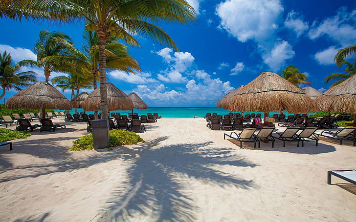
Playas Paradisíacas
Disfruta de paisajes costeros con arena blanca, aguas cristalinas y espectaculares atardeceres.
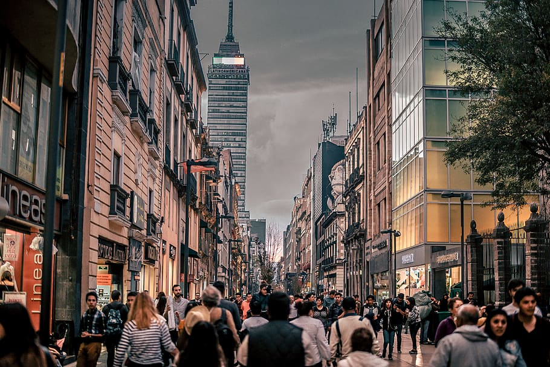
Ciudades Históricas
Recorre calles llenas de historia, arquitectura colonial y monumentos emblemáticos.
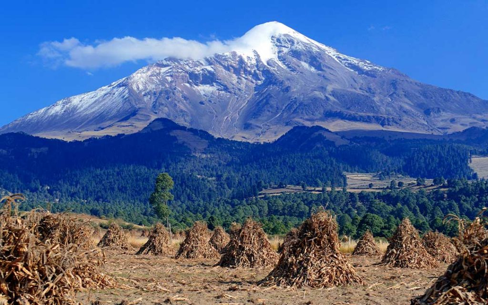
Montañas y Naturaleza
Explora senderos, bosques y paisajes naturales ideales para el ecoturismo.

Desiertos Exóticos
Descubre dunas impresionantes, oasis naturales y paisajes únicos que ofrecen aventuras inolvidables.
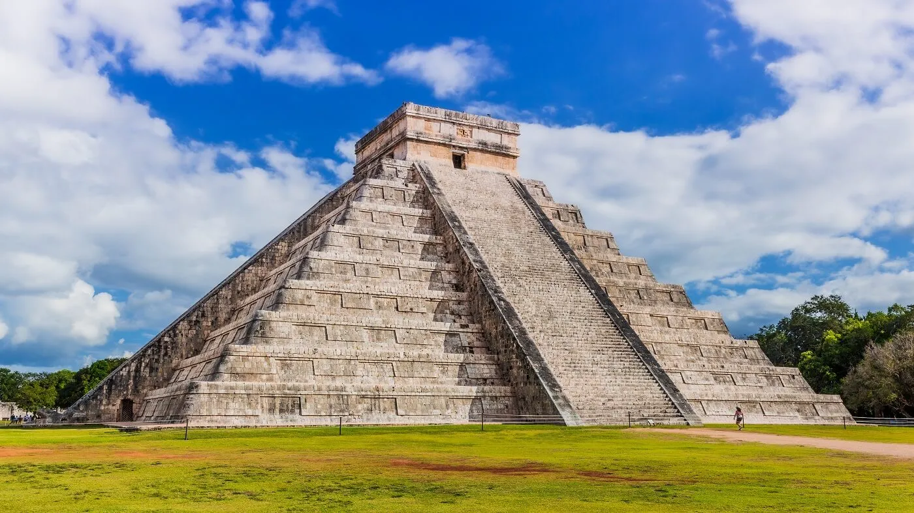
Ruinas Arqueológicas
Viaja al pasado visitando antiguas civilizaciones y monumentos históricos reconocidos mundialmente.
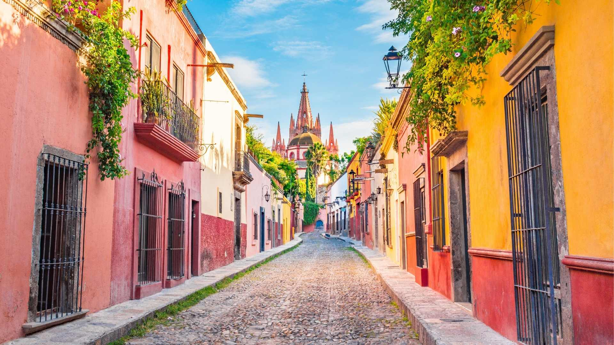
Pueblos Mágicos
Conoce tradiciones, gastronomía local y arquitectura típica en destinos llenos de encanto cultural.
Beneficios del Turismo
💼 Generación de Empleo
El turismo crea oportunidades laborales en hoteles, restaurantes, agencias de viaje y transporte.
🌎 Intercambio Cultural
Permite conocer nuevas costumbres, idiomas, tradiciones y estilos de vida.
🏛 Conservación del Patrimonio
Fomenta la protección de monumentos históricos, zonas arqueológicas y espacios culturales.
🌿 Turismo Sustentable
Impulsa prácticas responsables que ayudan a preservar los recursos naturales para futuras generaciones.
📈 Crecimiento Regional
Incrementa la inversión en infraestructura, servicios y desarrollo local.
🤝 Inclusión Social
Promueve la participación de comunidades locales en actividades económicas y culturales.
Destinos Más Visitados
| Destino | Tipo | Atractivo Principal |
|---|---|---|
| Cancún | Playa | Mar Caribe |
| París | Ciudad | Torre Eiffel |
| Roma | Histórico | Coliseo Romano |
| Machu Picchu | Arqueológico | Ruinas Incas |
| Tokio | Moderno | Tecnología y Cultura |
Experiencias que Puedes Vivir
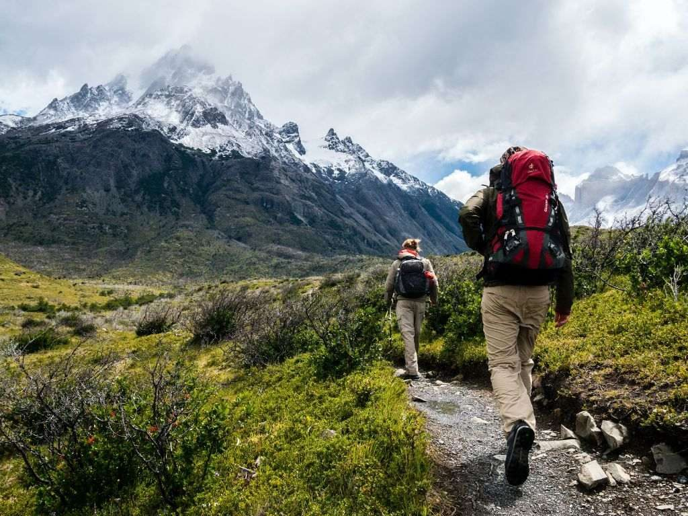
Senderismo
Recorre rutas naturales y disfruta de paisajes impresionantes rodeados de flora y fauna.
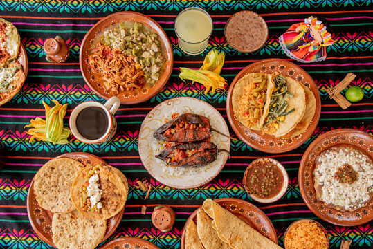
Rutas Gastronómicas
Degusta platillos tradicionales y descubre sabores característicos de cada región.
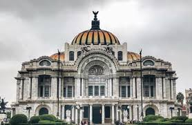
Museos y Cultura
Conoce la historia y patrimonio cultural mediante exposiciones y recorridos guiados.
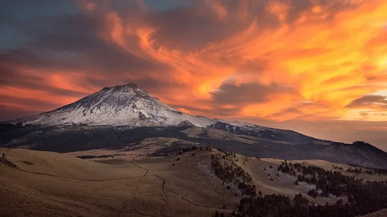
Fotografía de Paisajes
Captura momentos únicos en escenarios naturales y urbanos de gran belleza.
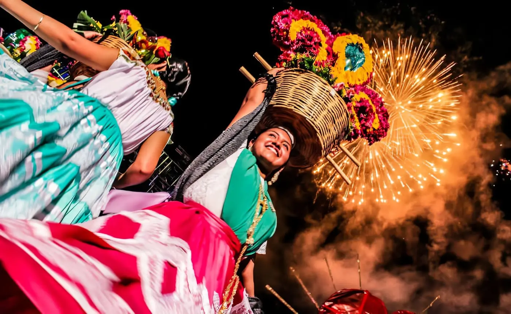
Festivales Tradicionales
Vive celebraciones llenas de música, danza y expresiones culturales.
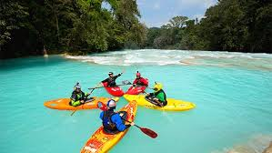
Turismo de Aventura
Experimenta emociones intensas mediante actividades como rafting, tirolesa y escalada.
Nuestro Impacto Turístico
Miles de viajeros descubren nuevos destinos cada año gracias a la información y experiencias compartidas en portales turísticos alrededor del mundo.
150+
Destinos Recomendados
50+
Países Explorados
10,000+
Turistas Inspirados
300+
Experiencias Compartidas
Recursos de Interés
Puedes consultar información adicional sobre turismo en los siguientes sitios: